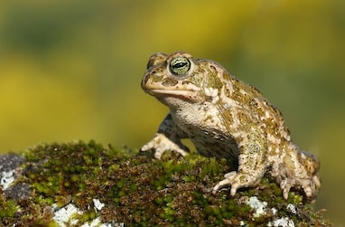
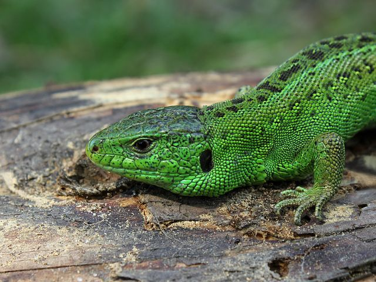
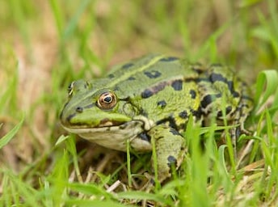

Reptile 1902 - 2014
Amphibia
Amphibians are ectothermic, tetrapod vertebrates of the class Amphibia. Modern amphibians are all Lissamphibia. They inhabit a wide variety of habitats, with most species living within terrestrial, fossorial, arboreal or freshwater aquatic ecosystems.
IMAGES

Anguis fragilis
Anguis fragilis is a reptile native to Eurasia. It is also called a deaf adder, a slowworm,[2] a blindworm, or regionally, a long-cripple, to distinguish it from the Peloponnese slowworm. These legless lizards are also sometimes called common slowworms. The "blind" in blindworm refers to the lizard's small eyes, similar to a blindsnake (although the slowworm's eyes are functional
IMAGES

Bofu bufo
The common toad, European toad, or in Anglophone parts of Europe, simply the toad (Bufo bufo, from Latinbufo "toad"), is an amphibian found throughout most of Europe (with the exception of Ireland, Iceland, and some Mediterranean islands), in the western part of North Asia, and in a small portion of Northwest Africa. It is one of a group of closely related animals that are descended from a common ancestral line of toads and which form a species complex.
IMAGES

Coronella austriaca
The smooth snake (Coronella austriaca)[3] is a species of non-venomous snake in the family Colubridae. The species is found in northern and central Europe, but also as far east as northern Iran. The Reptile Databaserecognizes two subspecies as being valid, including the nominotypical subspecies described here
IMAGES
Epidalea calamita
The natterjack toad (Epidalea calamita) is a toad native to sandy and heathland areas of Europe. Adults are 60–70 mm in length and are distinguished from common toads by a yellow line down the middle of the back, and parallel paratoid glands. They have relatively short legs, and this gives them a distinctive gait, contrasting with the hopping movement of many other toad species.
IMAGES
Ichthyosaura alpestris
The alpine newt (Ichthyosaura alpestris) is a species of newt native to continental Europe and introduced to Great Britain and New Zealand. Adults measure 7–12 cm (2.8–4.7 in) in total and are usually dark grey to blue on the back and sides, with an orange belly and throat. Males are more conspicuously coloured than the drab females, especially during breeding season.
IMAGES

Lacerta agilis
The sand lizard is a sexually dimorphic legged lizard. In northwest Europe, both sexes are characterised by lateral and dorsal strips of ocellated (eye-shaped) markings, dark patches with pale centres. Colouration varies across their European and Russian range.
IMAGES
Lissotriton
Lissotriton is a genus of newts native to Europe and parts of Asia Minor. As most other newts, they are aquatic as larvae and during breeding time but live in terrestrial, humid habitats over the rest of the season
IMAGES

Lissotriton vulgaris
The smooth newt, northern smooth newt or common newt (Lissotriton vulgaris) is a species of newt commonly found throughout Europe, except the far north, areas of Southern France and the Iberian Peninsula.[4] It is closely related with several similar species that were previously classified as subspecies
IMAGES
Natrix helvetica
The barred grass snake (Natrix helvetica) is a non-venomous colubrid snake from Western Europe, living in and close to water. It was included within the grass snake species, Natrix natrix, until August 2017, when genetic analysis suggested that it was better treated as a separate species
IMAGES

Ophidia
Ophidia (also known as Pan-Serpentes[2]) is a group of squamate reptiles including modern snakes and all reptiles more closely related to snakes than to other living groups of lizards.
IMAGES
Pelophylax
Pelophylax is a genus of true frogs widespread in Eurasia, with a few species ranging into northern Africa. This genus was erected by Leopold Fitzinger in 1843 to accommodate the green frogs of the Old World, which he considered distinct from the brown pond frogs of Carl Linnaeus' genus Rana
IMAGES
esculentus
The edible frog (Pelophylax kl. esculentus) [1][2] is a name for a common European frog, also known as the common water frog or green frog
IMAGES

Pelophylax ridibundus
The marsh frog (Pelophylax ridibundus) is the largest frog native to Europe and belongs to the family of true frogs. It is very similar in appearance to the closely related edible frog and pool frog.
IMAGES
Rana temporaria
The common frog (Rana temporaria), also known as the European common frog, European common brown frog, or European grass frog, is a semi-aquatic amphibian of the family Ranidae.
IMAGES

Reptilia
Reptiles are tetrapod animals in the class Reptilia, comprising today's turtles, crocodilians, snakes, amphisbaenians, lizards, tuatara, and their extinct relatives including non-avian dinosaurs.
IMAGES

Salamandridae
Salamandridae is a family of salamanders consisting of true salamanders and newts. Currently, 74 species (with more expected) have been identified in the Northern Hemisphere - Europe, Asia, the northern tip of Africa, and North America. Salamandrids are distinguished from other salamanders by the lack of rib or costal grooves along the sides of their bodies and by their rough skin. Their skin is very granular because of the number of poison glands.
IMAGES

Trachemys scripta
The pond slider (Trachemys scripta) is a species of common, medium-sized, semiaquatic turtle. There are three subspecies,[2] the most recognizable of which is the red-eared slider (T. s. elegans), which is popular in the pet trade and has been introduced to other parts of the world by people releasing it to the wild.
IMAGES

Triturus cristatus
The northern crested newt, great crested newt or warty newt (Triturus cristatus) is a newt species native to Great Britain, northern and central continental Europe and parts of Western Siberia. It is a large newt, with females growing up to 16 cm (6.3 in) long.
IMAGES

Vipera berus
Vipera berus, also known as Marlies, Prags, Bardas or the common European adder[3] or common European viper,[4] is a venomous snake that is extremely widespread and can be found throughout most of Western Europeand as far as East Asia
IMAGES

Zootoca vivipara
The viviparous lizard, Zootoca vivipara (formerly Lacerta vivipara), is a Eurasian lizard. It lives farther north than any other species of non-marine reptile, and most populations are viviparous (giving birth to live young), rather than laying eggs as most other lizards do. It is the only species in the monotypic genus Zootoca